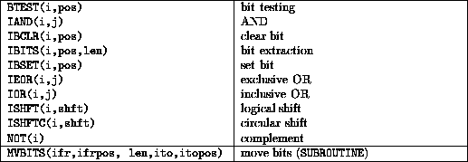
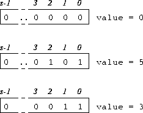

Summary,

Variables used as bit arguments must be INTEGER valued. The model for bit representation is that of an integer so 0 would have a bit representation of all 0's, 1 would have all zeros except for a 1 in the last position (position zero) ( 00...0001). The positions are numbered from zero and go from right to left (just like regular binary numbers.)
The model for bit representation is that of an unsigned integer, for example,

Figure 13: Visualisation of Bit Variables
The number of bits in a single variable depends on the compiler -- parameterised integers should be used to fix the number of bytes. The intrinsic BIT_SIZE gives the number of bits in a variable.
Here is a summary of the bit intrinsics and examples of their use; assume that A has the value 5 (00...000101) and B the value 3 (00...000011) in the following:
.TRUE. if the bit in position pos of INTEGER i is 1, .FALSE. otherwise, for example, BTEST(A,0) has value .TRUE. and BTEST(A,1) is .FALSE..
The two arguments are INTEGER the result is an INTEGER obtained by doing a logical .AND. on each bit of arguments, for example, IAND(A,B) is 1 (00...000001).
Set bit in position pos to 0, for example, IBCLR(A,0) is 4 (00...000100).
IBITS(A,1,2) is 2 (10 in binary) or effectively 00..00010.
Set bit in position pos to 1, for example, IBSET(A,1) is 7 (00...000111).
For example, IEOR(A,B) is 6 (00...000110) and IOR(A,B) is 7 (00...000111).
Shift the bits shft positions left (if shft is negative move bits to the right). ISHFT fills vacated positions by zeros ISHFTC wraps around. for example, ISHFT(A,1) is 00...001010 (10), ISHFT(A,-1) is 00...000010 (2). ISHFTC(A,1) is 00...001010 (10), ISHFTC(A,-1) is 10...000010 (-2147483646).
NOT(A) is 11...111010 (-6).
For example MVBITS(A,1,2,B,0) says ``move 2 bits beginning at
position 1 in A to B position 0'' , this gives
B the value 00...000010 (2).
, this gives
B the value 00...000010 (2).